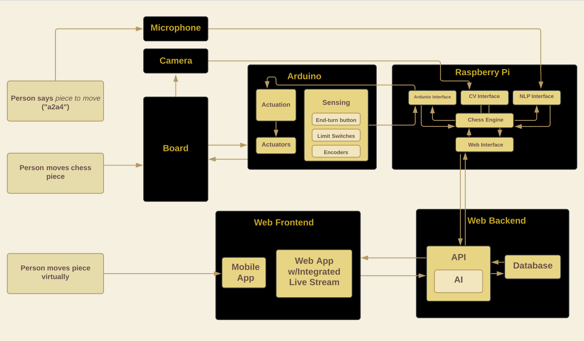
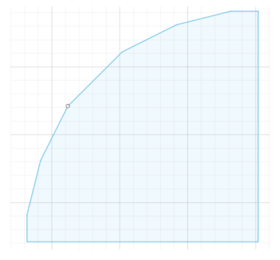
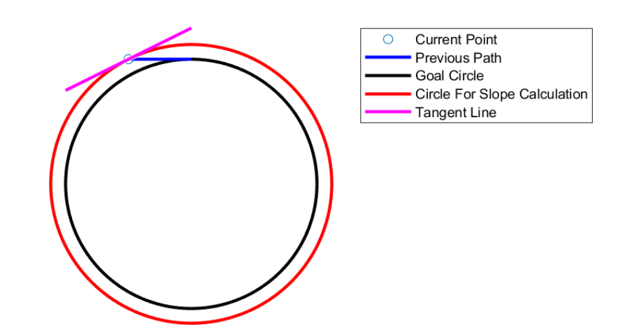
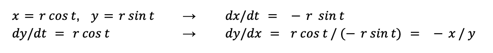
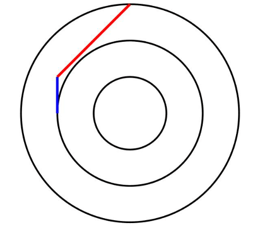
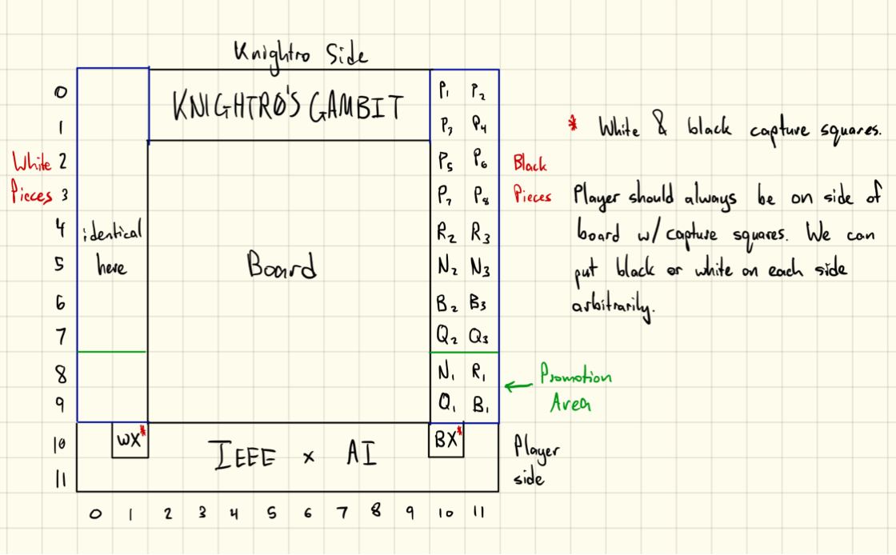
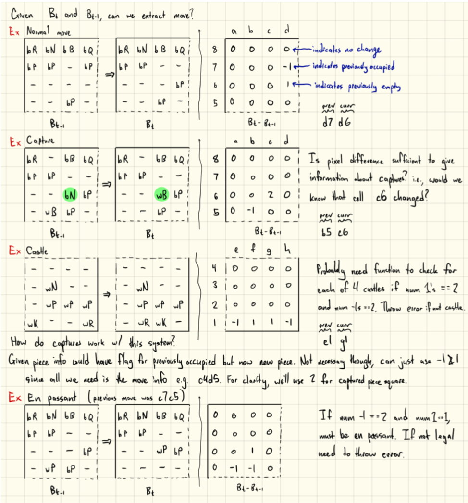

<!DOCTYPE html> 
<html lang="en"></html> 
  <head>
    <link rel="stylesheet" href="css/software.css"/>
    <link href='https://fonts.googleapis.com/css?family=Exo' rel='stylesheet'>
    <link href='https://fonts.googleapis.com/css?family=Roboto' rel='stylesheet'>
  </head>
  <body> 
    <header class = "site-header">
        <div id="site-header-name">Knightr0's Gambit</div>
        <hr>
        <div id= "site-header-subtitle">A UCF AI/UCF IEEE Collaboration</div>
    </header>
    <div class="sidebar">
      <a href="https://www.ucf.edu" target="_blank" rel="noopener noreferrer"></a>
      <a href="index.html">Home</a>
      <a href="https://github.com/ucfai/knightros-gambit" target="_blank" rel="noopener noreferrer">Github</a>
      <a href="hardware.html">Hardware</a>
      <a href="software.html">Software</a>
      <a href="members.html">Members</a>
    </div>
    <div class = "container">
      <div id="intro">Software</div><br/><br/>
      <div class="grid-container2">
        <div class="grid-img"><br>Mock System Diagram</div>
      </div>
      <div id="background">Hardware Interface Software</div>
      <div id="text">Our plan is to implement a software system using two processing units, a Raspberry Pi and an ESP32 microcontroller. 
        The Raspberry Pi will run a game loop to keep track of game state (whose turn it is, past moves, etc.), compute moves using our 
        custom AI, and process images taken of the board to compute board state after the player moves a piece. The AI move is then 
        converted to a standardized message format (see <a href="#opCode">OpCode</a>) and sent to the ESP32 microcontroller using UART 
        serial communication. The microcontroller then actuates the physical board mechanism (motors and electromagnet) and sends back 
        status messages indicating current state of the board/microcontroller (see <a href="#ard">ArduinoStatus</a>). UART serial 
        communication is used as it allows us to easily send data in both directions.</div>
      <div id="subBackground">Piece recentering capability</div>
      <div id="text">The centerPiece() function is used after a player makes a move to ensure that the player's chess piece placement is 
        aligned properly and does not interfere with the board's piece movement. The function is composed of concentric circle approximations
        and shifts between the circles, with calls to makeCircle() and moveToNextCircle() respectively.<br><br>The makeCircle() function receives 
        two parameters, int circle and int firstQuarter. The function moves the electromagnet along the given circle size, starting from the 
        given quarter (where 0=top, 1=left, 2=bottom, 3=right). The movements are restricted to slopes that can be generated through combinations 
        of the EasyDriver MS1 and MS2. Each direction can be set to 1/8, 1/4, 1/2, or full step size. This allows for slope settings of 0, 1/8, 1/4, 1/2, 1, 2, 
        4, 8, and vertical. Moving the x and y motors in paired steps prevents the magnet from making a stair-step style movement, and increases 
        movement speed by reducing the amount of logic required to make the movements. During the movement, a previously computed number of moves 
        is made at each slope. Several of the slopes have two different scales in order to further accelerate the movement. A slope of 1, for example
        , moves as far as possible with full steps in the x and y directions, and switches to ⅛ scale steps in both directions for the last 1-7 
        movements.</div>
        <br><br><div class="grid-container">
          <div class="grid-img2"><br>Figure 1: Example of circular motion composed of multiple tangent line 
            approximations</div>
          <div class="grid-img3"><br><br><br>Figure 2: Visualization of tangent line computation to obtain instantaneous 
            slope</div>
          <div class="grid-text"><br><br>The number of steps at each slope is computed by the calculatePulsesPerSlope() 
          function, which is only called once in the setup() initialization function. It calculates the instantaneous slope of a circle at the 
          current point, approximates it to one of the available slopes, then increments the x and y position for that slope. It repeats this 
          process until the first quarter of the circle is complete. The remaining three quarters of the circle use the same pulses per slope 
          counts with different x and y directions and/or reversed order.</div>
          <div class="grid-text"><br><br>An example of the slope calculation process is shown (Figure 2). The initial point is at the topmost 
            part of the ideal circle. Movement begins with horizontal steps to the left. After each step, the slope is recalculated using a tangent 
            line to the concentric circle that passes through the point. The slope of the tangent line is then approximated to one of the nine slopes 
            that can be generated by the EasyDrivers, and is used for the next step. Note that the difference between the path and goal circle is greatly 
            exaggerated for visualization purposes.</div>
        </div>
      <br><br><div id="text">The getInstantaneousSlope() function calculates the instantaneous slope, dy/dx, of a circle at the provided point. The 
        calculation is derived from the parametric equations for a circle.
        <div class="grid-container2">
          <div class="grid-imgC"></div>
        </div> 
        The current x and y coordinates are calculated using the number of steps remaining in each direction and the radius of the circle.
        </div>
      <br><br><br><div class="grid-container">
        <div class="grid-img2"><br>Figure 3: Path from outer to inner concentric circle composed of diagonal + 
          straight line</div>
        <div class="grid-text"><br><br><br>The moveToNextCircle() function moves the electromagnet from the current circle to a smaller 
          concentric circle in two motions (see Figure 3). The first motion has a slope of ±1 and aligns the magnet with the side of the 
          next circle. The second motion is a vertical or horizontal movement to reach the starting point for the next circle. This is much 
          easier to calculate than a direct movement, given our slope constraints. Additionally, it allows the magnet to cover more area 
          than a direct movement. The final call to moveToNextCircle() implicitly resets the electromagnet to the center of the square.</div>
      </div>
      <div id="background">Game State Managment</div>
      <div id="text">The game state management code is comprised of a few fundamental components:</div>
      <ul class="a">
        <li>The entry point which is the main Game loop</li>
        <li>A BoardInterface that wraps communication with the chess board as well as a chess engine for maintaining board state</li>
        <li>Various Player models to support different modes of interaction</li>
        <li>ArduinoStatus and OpCode enums that define message passing between Pi and Arduino</li>
      </ul>
      <div id="subBackground">Game</div>
      <div id="text">After setting up the connection to the board and doing startup tasks (such as determining who moves first), the 
        general structure of the game loop is as follows</div>
      <ol class="a">
        <li>Get the board status from the arduino (see <a href="#ard">ArduinoStatus</a>)</li>
        <li>If the status is EXECUTING_MOVE or MESSAGE_IN_PROGRESS, continue</li>
        <li>If the status is ERROR, handle the error</li>
        <li>If it is the human's turn</li>
        <ol class ="b" type="a">
          <li>Wait for the END_TURN_BUTTON_PRESSED signal from the Arduino</li>
        </ol>
        <li>If it is the AI's turn</li>
        <ol class ="b" type="a">
          <li>Get move from the neural network</li>
          <li>If move is valid, send it to the board, else, get the next best move</li>
        </ol> 
        <li>While not checkmate/stalemate, repeat</li>
      </ol>
      <div id="text">We plan to set up an architecture for a queue of moves: Each loop, we try to dispatch one move from the queue. 
        If the queue is non-empty, we dispatch moves until it is. In order to pop the front of the queue, the Arduino needs to send 
        back the move count of the previously dispatched move and idle status. Only then do we pop that move from the queue and start 
        sending the next move to be processed. Once the queue is empty, we proceed to the rest of the loop.</div>
      <div id="subBackground">BoardInterface</div><br>
      <div class="grid-container">
        <div class="grid-img"><br>Diagram showing indexing scheme, graveyard, capture squares, and promotion area</div>
        <div class="grid-text"><div id="grid-sub">Board</div><br>The Board class is the interface point between the Arduino and the Raspberry Pi. Board is used to send and 
          receive messages through the Board interface (see <a href="#ard">ArduinoStatus</a> and <a href="#opCode">OpCode</a>), validate 
          moves, and handle captures/promotions.<br><div id="grid-sub">Engine</div><br>We construct a simple wrapper around <a href="https://python-chess.readthedocs.io/" 
          target="_blank" rel="noopener noreferrer">python-chess</a> and add some helper functions to keep track of board state.<br><div id="grid-sub">
          <a id="grave">Graveyard</a></div><br>We formulate the Graveyard to avoid the need to use computer vision to keep track of captures and promotions. 
          By having a capture square, we can determine from the state of the board which piece was captured, and automatically move it to 
          a specified position in the graveyard. When the user wants to promote their pawn to a new piece, they select the replacement 
          piece from the designated promotion area. When the board state determines a promotion happens, the promotion area is backfilled 
          from the other pieces in the graveyard (as long as there are spare pieces available).</div>
      </div>
      <div id="subBackground">Player</div>
      <div id="text">We eventually plan to allow users to play the board through</div>
      <ol class="a">
        <li>Physical interface: User moves physical pieces on the chessboard</li>
        <li>Command line interface (CLI): User specifies pieces to move in grid algebraic notation (GAN) format (e.g. e2e4)</li>
        <li>Web graphical user interface (GUI): User specifies pieces to move by dragging and dropping (similar to <a 
          href="https://lichess.org/" target="_blank" rel="noopener noreferrer">Lichess</a> or <a href="https://www.chess.com/" 
          target="_blank" rel="noopener noreferrer">chess.com</a>)</li>
        <li>Voice interface: User specifies pieces to move using voice commands (see <a href="#speechRecognition">Speech Recognition</a>)</li>
      </ol>
      <div id="subBackground"><a id="opCode">OpCode</a></div>
      <div id="text">This is an enum of operation codes used to provide information about the type of move the Arduino should make.</div>
      <ol class="a">
        <li>MOVE_PIECE_IN_STRAIGHT_LINE: A code to indicate that the Arduino should use a straight-line path (diagonals allowed)</li>
        <li>MOVE_PIECE_ALONG_SQUARE_EDGES: A code to indicate that the Arduino should move the piece along square edges instead of through 
          the center of squares. This is used for knights if adjacent pieces are in the way, and for moving pieces to and from the Graveyard, 
          and for castling.</li>
        <li>ALIGN_PIECE_ON_SQUARE: A code to indicate that the Arduino should use the electromagnet to center piece on square (used after 
          human moves).</li>
      </ol>
      <div id="text">Note that queenside and kingside castling are composed of two moves; one move of type 1 (king moving in straight line) 
        and one move of type 2 (rook moving around king).
      Messages sent from Pi to Arduino have the following format:<br>
      "~&lt;OpCode&gt;&lt;StartPosition&gt;&lt;EndPosition&gt;&lt;MoveCount&gt;"
      <br>~ is a delimiter; OpCode is as described above; StartPosition and EndPosition are 2-character strings of the form &lt;A-L&gt;&lt;A-L&gt; 
      to index the 12x12 array (they are converted on the Arduino to two integers in the range of [0, 11]; MoveCount is an integer that serves as 
      a handshake between the Arduino and Pi. Move number &lt;MoveCount&gt; is sent until the Arduino responds with the same &lt;MoveCount&gt; and 
      an IDLE status (see <a href ="#ard">ArduinoStatus</a>), after which move number &lt;MoveCount + 1&gt; is sent if it is available. Note that we 
      send `MoveCount % 255` since a byte only allows sending 256 0-indexed values. ExtraByte is used whenever there is an error and is used to pass 
      along additional information about the type of error.</div>
      <div id="subBackground"><a id="ard">ArduinoStatus</a></div>
      <div id="text">This is an enum of status codes used to provide information about the current operational state of the Arduino.</div>
      <ol class="a">
        <li>IDLE: A status to indicate that the Arduino is waiting for the next move.</li>
        <li>MESSAGE_IN_PROGRESS: A status to indicate that the Arduino is currently processing a message from the Pi.</li>
        <li>EXECUTING_MOVE: A status to indicate that the Arduino is currently executing a move.</li>
        <li>END_TURN_BUTTON_PRESSED: A status to indicate that the human player pressed the end turn button. Pi should then take a picture and 
          compute the difference in board state.</li>
        <li>ERROR: A status to indicate that an error occurred.</li>
      </ol> 
      <div id="text">Messages sent from Arduino to Pi have the following format:<br>
      "~&lt;ArduinoStatus&gt;&lt;MoveCount&gt;&lt;ExtraByte&gt;"<br>
      ~ is a delimiter; ArduinoStatus is as described above; MoveCount is as described in <a href="#opCode">OpCode</a>. From the Arduino side, 
      MoveCount serves as a handshake between the Arduino and Pi to confirm that move number &lt;MoveCount&gt; is either being executed (EXECUTING_MOVE), 
      was the last move executed (IDLE), or is the move currently being sent (MESSAGE_IN_PROGRESS). When the Pi receives an IDLE status from the Arduino 
      along with move number &lt;MoveCount&gt;, the Pi sends the move corresponding to &lt;MoveCount + 1&gt; if it is available. ExtraByte is used whenever 
      there is an error and is used to pass along additional information about the type of error.</div>
      <div id="background">Chess AI</div>
      <div id="text">For the AI and computer vision side of the project, our plan is to utilize a variety of techniques from AI and combine them into 
        the most efficient algorithm, parallel to the algorithm implemented by AlphaZero.<br> The chess AI will be trained using the Actor Critic algorithm 
        for reinforcement learning, parameterized by a neural network (a network of equations that takes in input(s) and returns output(s)). We may initialize 
        the network parameterization using supervised learning over a training set of existing chess games played by humans to allow learning to get off to a 
        faster and more efficient start. We will decide this by comparing its efficiency to an AI that learns exclusively through self play.<br> To test the 
        efficiency and utility of different machine learning approaches to chess AI, we will compare the convergence rate and style of play of our AI to other 
        state-of-the-art methods. We will then find which approach is the most suited for learning in as little time as possible and compare which approaches 
        lead to contrasting playing styles. This will include testing against other chess AIs such as Stockfish, Maia, and Leela Chess Zero, and also human players. 
        When testing against people, we plan to ask them about their experience playing against our AI and to rate how it plays.</div>
      <div id="background"><a id="computerVision"></a>Computer Vision</a></div>
      <div id="text">Our plan involves utilizing computer vision to both detect where pieces are on the board initially and where the pieces get moved by the player. 
        Our system will determine the location of each piece based on the difference in the board state after each move. Since only a fixed number of pieces can be 
        moved at once, we can cross reference the board state changes with the rules of chess to keep track of the locations of each piece throughout the game. 
        This will be used to determine where the AI is allowed to move a specific piece on the board, if a human player makes an error, or where to find a new piece 
        if a pawn promotion is necessary. In summary, our problem statement is to use the state of the board at time t-1 and an image of the board at time t to get 
        the board state at time t.</div>
      <div id="subBackground">Preliminary Ideas</div>
      <div class="grid-container2">
        <div class="grid-img"><br>Outline of ideas about computer vision</div>
      </div>
      <div id="subBackground">Approach</div>
      <div id="text">Our approach given the above problem statement is as follows:</div>
      <ol class="a">
        <li>Take a picture of the board from a fixed angle (top down or skew? TBD)</li>
        <li>Perform edge detection with OpenCV (possibly using Canny edge detection)</li>
        <li>Perform line detection with OpenCV (possibly using Hough edge detection)</li>
        <li>Compute intersection points with OpenCV (possibly using findContours)</li>
        <li>Find corners of the chess board</li>
        <li>Compute transformation matrix to constant image dimension (e.g. 800x800)</li>
        <li>Transform/crop/resize image based on transformation matrix and computed corners </li>
        <li>Segment board into 64 squares</li>
        <li>For each square</li>
        <ol class ="b" type="a">
          <li>Check if square is occupied</li>
          <li>If occupied, determine piece color</li>
          <li>Determine difference between B[t-1] and B[t] to compute delta_matrix[i][j]</li>
        </ol>
        <div class="grid-mini">
          <div class="grid-miniT">Using pixel difference to compute change in board state. If a square is either empty in both or occupied in both images, we 
            assign a 0 to the corresponding cell (to indicate no difference in board state for that cell); if a square is occupied at time t and is 
            empty at t-1, we assign a -1; lastly, if a square was empty at time t and is occupied at t-1, we assign a 1.</div>
          <div class="grid-miniT"></div>
        </div>
        <li>If needed, handle piece promotion</li>
        <ol class ="b" type="a">
          <li>Approach 1: Use a neural network based classifier to determine which piece was chosen for promotion</li>
          <li>Approach 2: Ask user to specify (via GUI or CLI) which piece they chose for promotion</li>
        </ol> 
        </ol>
        <div id="text">Steps 2-6 are done a single time at program startup; we can then reuse the computed values to segment the board and 
          isolate each square.<br>To avoid using computer vision to keep track of the Graveyard state (see <a href="#grave">Graveyard</a>), we 
          have a capture square and designated promotion spaces in the graveyard so that we only need computer vision for the main part of the board.</div><br><br><br>
        <div id="background2"><a id="speechRecognition">Speech Recognition</a></div>
        <div id="text">The <a href="https://www.youtube.com/watch?v=IwjZ1J2b8UY" target="_blank" rel="noopener noreferrer">Harry Potter scene</a> 
          where Harry and Ron give commands to move pieces using their voice alone while playing Wizard's Chess inspired us to implement something similar 
          for this project. We use a <a href="https://pypi.org/project/SpeechRecognition/" target="_blank" rel="noopener noreferrer">python wrapper</a> 
          of Google's speech recognition API to convert audio input to a representation that is compatible with our chess engine.</div>
        <div id="background"><a id="webApp">Web Application</a></div>
        <div id="text">Our web application will consist of a front end web app built using Javascript that uses the 
          <a href="https://github.com/jhlywa/chess.js/blob/master/README.md" target="_blank" rel="noopener noreferrer">chess.js</a> and 
          <a href="https://chessboardjs.com/" target="_blank" rel="noopener noreferrer">chessboard.js</a> libraries. To communicate with the 
          chessboard, we need two way communication. One option we are considering is to use a flask backend that updates a database when moves are made; 
          this can then be polled by the frontend and game loop to get the most recent move. Another option is to use web sockets to allow direct two way 
          communication without the need to poll a database. In either case, we need to set up authentication of some sort to ensure that only authorized 
          users are sending moves to the chess board, but we want to publish the current state of the board to a non-auth-protected page for anyone to 
          follow along with the current game. We also want to make user profiles to track statistics like win-loss record, games played, and elo, among 
          other attributes. Lastly, we aim to set up a live-stream of the physical chess board and host that alongside the other components of the web app.</div>
      </div>
  </body>
</html>